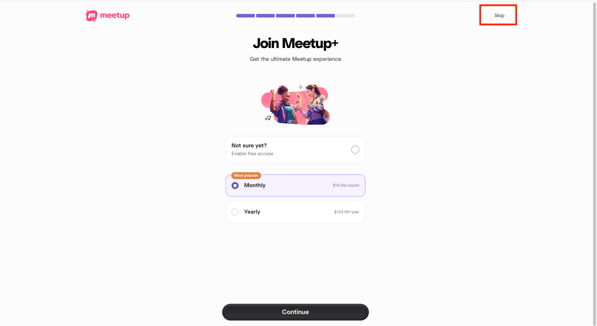
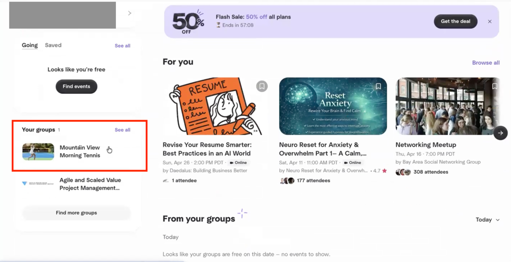
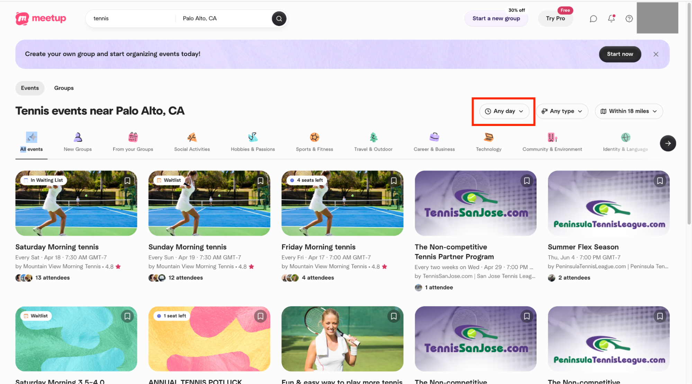

Usability Testing for the Meetup Website
Evaluating how people discover, join, and follow through on events on the Meetup website.
Overview
This project evaluated the usability of Meetup through summative usability testing. We observed six participants as they completed five core tasks related to event discovery, account creation, event participation, and group management.
By combining task performance metrics, behavioral observations, user feedback, and SUS scores, we identified key usability issues and developed recommendations to improve the overall experience.
Problem Statement
Meetup helps users discover events and communities based on shared interests, but key actions such as finding events, joining groups, and managing memberships involve multiple steps and interaction patterns. This study aimed to evaluate how effectively users could complete these core tasks and identify usability barriers that affected clarity, efficiency, and overall ease of use.
Usability Testing
We conducted summative usability testing to evaluate how successfully and efficiently users could complete Meetup's core event and group-related tasks.
Two research questions guided the study:
How effectively and efficiently can users discover and join relevant events on Meetup?
What usability barriers do users encounter when signing up and managing event or group participation?
We conducted summative usability testing with six participants across five core Meetup tasks. During each task, we recorded task performance and observed user behavior, followed by a post-test interview and the System Usability Scale (SUS) to capture participants' overall experience.
Quantitative
Task Completion Time: Time required to complete each task.
Completion Success: Whether participants successfully completed each task.
Errors: Number of errors made during task completion.
SUS Score: Overall perceived usability measured using the System Usability Scale.
Qualitative
Behavioral: Navigation paths, actions, hesitation, confusion, and other observed behaviors during each task.
Subjective: Post-test interview responses, participant feedback, and direct quotes.
You’re free this weekend and want to find a tennis event around you.
You find many of the events on the website interesting, so you decide to sign up for (or log in to) an account.
After browsing for a while, you want to find and join a tennis event near you on Saturday to see if you enjoy the sport.
After deciding to attend this event, you’d like to join 1 tennis group so you can keep track of their events regularly.
After trying a few times, you decide tennis isn’t for you. Now, you’d like to leave the tennis group.
We recruited 6 participants with varying levels of familiarity with Meetup and similar event platforms. Most participants had limited prior experience with Meetup, allowing us to observe how both new and returning users understood the platform’s core features.
All participants successfully found a nearby tennis event with no errors. Most relied directly on the search bar, suggesting that basic event discovery was relatively intuitive. Some confusion remained around how search results were labeled and presented.
Although all participants completed the task, four of six experienced confusion around the unexpected membership or payment step. The unclear “Skip” option and lack of completion feedback made the sign-up flow unnecessarily difficult.
Participants struggled with date filtering and unexpected membership prompts. Some manually scanned search results instead of using the date filter, while one participant incorrectly believed the task was complete after reaching the membership page.
Participants frequently confused “events” with “groups” and were unsure whether joining an event also meant joining its group. This terminology mismatch led to inefficient navigation and one task failure.
Most participants eventually left the group, but the action was difficult to discover. The “Manage Membership” label did not clearly communicate where users could leave a group, and participants followed inconsistent paths to complete the task.
The average SUS score was 47.92, below the benchmark of 68, indicating below-average perceived usability. Post-test interviews reinforced this result, with participants repeatedly mentioning confusing terminology, unclear system structure, and interruptions caused by membership prompts.
Recommendations
Based on the usability testing, SUS results, and post-test feedback, we identified three key opportunities to improve clarity, transparency, and efficiency across the Meetup experience.
Membership and payment prompts repeatedly interrupted users during sign-up and event participation, creating confusion about whether payment was required.
Make “Skip” and “Continue with free plan” more visible.
Avoid presenting membership prompts in the middle of critical task flows.
Present optional membership offers after users complete their primary task.

Participants frequently struggled to understand the relationship between events, groups, and membership, making group management less intuitive.
Clearly differentiate “Join an Event” and “Join a Group.”
Use consistent terminology for groups, events, and memberships.
Add a clear “Join This Group” action.
Make “Leave Group” a direct and visible action instead of hiding it under “Manage Membership.”

Participants often overlooked the time filter and manually scanned event results when searching for events on a specific day.
Make the time/date filter more visible within search results.
Make selecting a specific day easier and more direct.
Provide lightweight guidance for important search and filtering features.

Conclusion
Overall, the study showed that users could complete most core tasks, but often with unnecessary confusion and friction. Unexpected membership prompts, unclear terminology, and difficult-to-find filters affected users’ confidence and efficiency. These findings highlight opportunities to create a more transparent, intuitive, and predictable Meetup experience.